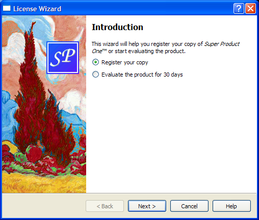

License Wizard Example
The License Wizard example shows how to implement complex wizards in Qt.

Most wizards have a linear structure, with page 1 followed by page 2 and so on until the last page. The Trivial Wizard example shows how to create such wizards.
Some wizards are more complex in that they allow different traversal paths based on the information provided by the user. The License Wizard example illustrates this. It provides five wizard pages; depending on which options are selected, the user can reach different pages.

The example consists of the following classes:
LicenseWizardinherits QWizard and implements a non-linear five-page wizard that leads the user through the process of choosing a license agreement.IntroPage,EvaluatePage,RegisterPage,DetailsPage, andConclusionPageare QWizardPage subclasses that implement the wizard pages.
The LicenseWizard Class
The LicenseWizard class derives from QWizard and provides a five-page wizard that guides the user through the process of registering their copy of a fictitious software product. Here's the class definition:
class LicenseWizard : public QWizard { Q_OBJECT public: enum { Page_Intro, Page_Evaluate, Page_Register, Page_Details, Page_Conclusion }; LicenseWizard(QWidget *parent = nullptr); private slots: void showHelp(); };
The class's public API is limited to a constructor and an enum. The enum defines the IDs associated with the various pages:
| Class name | Enum value | Page ID |
|---|---|---|
IntroPage | Page_Intro | 0 |
EvaluatePage | Page_Evaluate | 1 |
RegisterPage | Page_Register | 2 |
DetailsPage | Page_Details | 3 |
ConclusionPage | Page_Conclusion | 4 |
For this example, the IDs are arbitrary. The only constraints are that they must be unique and different from -1. IDs allow us to refer to pages.
LicenseWizard::LicenseWizard(QWidget *parent) : QWizard(parent) { setPage(Page_Intro, new IntroPage); setPage(Page_Evaluate, new EvaluatePage); setPage(Page_Register, new RegisterPage); setPage(Page_Details, new DetailsPage); setPage(Page_Conclusion, new ConclusionPage); setStartId(Page_Intro);
In the constructor, we create the five pages, insert them into the wizard using QWizard::setPage(), and set Page_Intro to be the first page.
#ifndef Q_OS_MAC setWizardStyle(ModernStyle); #endif
We set the style to ModernStyle on all platforms except macOS,
setOption(HaveHelpButton, true);
setPixmap(QWizard::LogoPixmap, QPixmap(":/images/logo.png"));
connect(this, &QWizard::helpRequested, this, &LicenseWizard::showHelp);
setWindowTitle(tr("License Wizard"));
}
We configure the QWizard to show a Help button, which is connected to our showHelp() slot. We also set the LogoPixmap for all pages that have a header (i.e., EvaluatePage, RegisterPage, and DetailsPage).
void LicenseWizard::showHelp() { static QString lastHelpMessage; QString message; switch (currentId()) { case Page_Intro: message = tr("The decision you make here will affect which page you " "get to see next."); break; ... default: message = tr("This help is likely not to be of any help."); } if (lastHelpMessage == message) message = tr("Sorry, I already gave what help I could. " "Maybe you should try asking a human?"); QMessageBox::information(this, tr("License Wizard Help"), message); lastHelpMessage = message; }
In showHelp(), we display help texts that are appropriate for the current page. If the user clicks Help twice for the same page, we say, "Sorry, I already gave what help I could. Maybe you should try asking a human?"
The IntroPage Class
The pages are defined in licensewizard.h and implemented in licensewizard.cpp, together with LicenseWizard.
Here's the definition and implementation of IntroPage:
class IntroPage : public QWizardPage { Q_OBJECT public: IntroPage(QWidget *parent = nullptr); int nextId() const override; private: QLabel *topLabel; QRadioButton *registerRadioButton; QRadioButton *evaluateRadioButton; }; IntroPage::IntroPage(QWidget *parent) : QWizardPage(parent) { setTitle(tr("Introduction")); setPixmap(QWizard::WatermarkPixmap, QPixmap(":/images/watermark.png")); topLabel = new QLabel(tr("This wizard will help you register your copy of " "<i>Super Product One</i>™ or start " "evaluating the product.")); topLabel->setWordWrap(true); registerRadioButton = new QRadioButton(tr("&Register your copy")); evaluateRadioButton = new QRadioButton(tr("&Evaluate the product for 30 " "days")); registerRadioButton->setChecked(true); QVBoxLayout *layout = new QVBoxLayout; layout->addWidget(topLabel); layout->addWidget(registerRadioButton); layout->addWidget(evaluateRadioButton); setLayout(layout); }
A page inherits from QWizardPage. We set a title and a watermark pixmap. By not setting any subTitle, we ensure that no header is displayed for this page. (On Windows, it is customary for wizards to display a watermark pixmap on the first and last pages, and to have a header on the other pages.)
int IntroPage::nextId() const { if (evaluateRadioButton->isChecked()) { return LicenseWizard::Page_Evaluate; } else { return LicenseWizard::Page_Register; } }
The nextId() function returns the ID for EvaluatePage if the Evaluate the product for 30 days option is checked; otherwise it returns the ID for RegisterPage.
The EvaluatePage Class
The EvaluatePage is slightly more involved:
class EvaluatePage : public QWizardPage { Q_OBJECT public: EvaluatePage(QWidget *parent = nullptr); int nextId() const override; private: QLabel *nameLabel; QLabel *emailLabel; QLineEdit *nameLineEdit; QLineEdit *emailLineEdit; }; EvaluatePage::EvaluatePage(QWidget *parent) : QWizardPage(parent) { setTitle(tr("Evaluate <i>Super Product One</i>™")); setSubTitle(tr("Please fill both fields. Make sure to provide a valid " "email address (e.g., john.smith@example.com).")); nameLabel = new QLabel(tr("N&ame:")); nameLineEdit = new QLineEdit; ... registerField("evaluate.name*", nameLineEdit); registerField("evaluate.email*", emailLineEdit); ... }
First, we set the page's title and subTitle.
Then we create the child widgets, create wizard fields associated with them, and put them into layouts. The fields are created with an asterisk (*) next to their name. This makes them mandatory fields, that is, fields that must be filled before the user can press the Next button (Continue on macOS). The fields' values can be accessed from any other page using QWizardPage::field().
Resetting the page amounts to clearing the two text fields.
int EvaluatePage::nextId() const { return LicenseWizard::Page_Conclusion; }
The next page is always the ConclusionPage.
The ConclusionPage Class
The RegisterPage and DetailsPage are very similar to EvaluatePage. Let's go directly to the ConclusionPage:
class ConclusionPage : public QWizardPage { Q_OBJECT public: ConclusionPage(QWidget *parent = nullptr); void initializePage() override; int nextId() const override; void setVisible(bool visible) override; private slots: void printButtonClicked(); private: QLabel *bottomLabel; QCheckBox *agreeCheckBox; };
This time, we reimplement QWizardPage::initializePage() and QWidget::setVisible(), in addition to nextId(). We also declare a private slot: printButtonClicked().
int IntroPage::nextId() const { if (evaluateRadioButton->isChecked()) { return LicenseWizard::Page_Evaluate; } else { return LicenseWizard::Page_Register; } }
The default implementation of QWizardPage::nextId() returns the page with the next ID, or -1 if the current page has the highest ID. This behavior would work here, because Page_Conclusion equals 5 and there is no page with a higher ID, but to avoid relying on such subtle behavior, we reimplement nextId() to return -1.
void ConclusionPage::initializePage() { QString licenseText; if (wizard()->hasVisitedPage(LicenseWizard::Page_Evaluate)) { licenseText = tr("<u>Evaluation License Agreement:</u> " "You can use this software for 30 days and make one " "backup, but you are not allowed to distribute it."); } else if (wizard()->hasVisitedPage(LicenseWizard::Page_Details)) { const QString emailAddress = field("details.email").toString(); licenseText = tr("<u>First-Time License Agreement:</u> " "You can use this software subject to the license " "you will receive by email sent to %1.").arg(emailAddress); } else { licenseText = tr("<u>Upgrade License Agreement:</u> " "This software is licensed under the terms of your " "current license."); } bottomLabel->setText(licenseText); }
We use QWizard::hasVisitedPage() to determine the type of license agreement the user has chosen. If the user filled the EvaluatePage, the license text refers to an Evaluation License Agreement. If the user filled the DetailsPage, the license text is a First-Time License Agreement. If the user provided an upgrade key and skipped the DetailsPage, the license text is an Update License Agreement.
void ConclusionPage::setVisible(bool visible) { QWizardPage::setVisible(visible); if (visible) { wizard()->setButtonText(QWizard::CustomButton1, tr("&Print")); wizard()->setOption(QWizard::HaveCustomButton1, true); connect(wizard(), &QWizard::customButtonClicked, this, &ConclusionPage::printButtonClicked); } else { wizard()->setOption(QWizard::HaveCustomButton1, false); disconnect(wizard(), &QWizard::customButtonClicked, this, &ConclusionPage::printButtonClicked); } }
We want to display a Print button in the wizard when the ConclusionPage is up. One way to accomplish this is to reimplement QWidget::setVisible():
- If the page is shown, we set the CustomButton1 button's text to Print, we enable the HaveCustomButton1 option, and we connect the QWizard's customButtonClicked() signal to our
printButtonClicked()slot. - If the page is hidden, we disable the HaveCustomButton1 option and disconnect the
printButtonClicked()slot.
See also QWizard and Trivial Wizard Example.